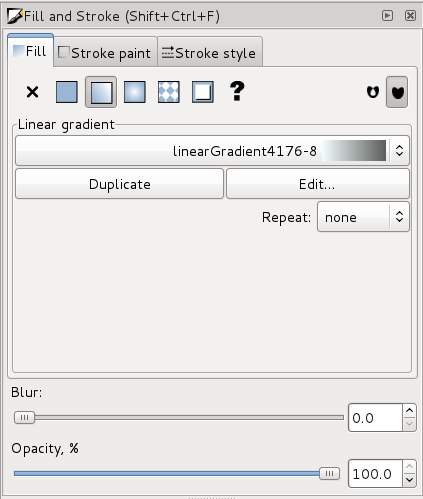
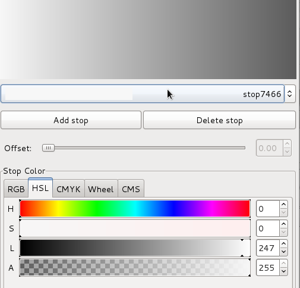
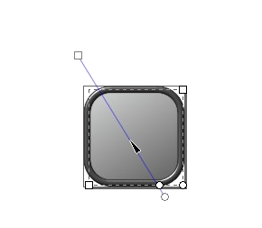
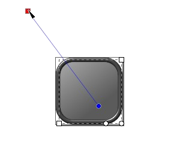
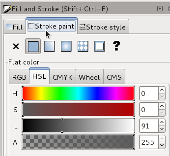

Iconography
The default theme of nemo is plastic
Explanation of the ideas behind plastic should go here
How to create plastic icons for your application
First, install inkscape from your distribution's repository, or download from inkscape.org
Second, download the icon template svg
Open icon-template.svg with inkscape, and hit SHIFT+CTRL+F to open 'Fill and Stroke' window. You can also look into the Object menu for the Fill and stroke command.
To change background gradient

Click on the icon's background filled with gradient and you will see this gradient appear in 'Fill and
Stroke' window in 'Fill' tab.

Click on 'edit' buton, the editing window will pop up.
Choose HSL.
Now you have to pick saturation from S line and lightness from L line.


You can manipulate the shape of you gradient with 'Edit path by nodes' (click F2 to choose this tool, then
click on background with gradient and manipulate.
To change border colour

Click on the icon's border and click on 'Stroke paint' tab in 'Fill and Stroke' window.
Choose hue, saturation and lightness for your border, picking them up from lines H, S and L.
Creating icon's content
Basic shapes
- To create shape you want to have in your icon use standard toolbar on the left of you Inkscape window.
- You can group your objects by selecting them and using CTRL+G (for ungroup use SHIFT+CTRL+G)
- Another useful tool is called 'union' and it joins your objects into one – select your objects and use
CTRL++ (NOTE: you may need to modify object's colour after that, because 'union' may modify it)
Making it look 3D
If you want you object to appear as convex or concave – applying the following flters in 'Filters' menu, to
you object, may be helpful:
- ABCs/Difuse light
- Shadows and Glows/Drop shadow
- ABCs/Specular light
- Shadows and Glows/Inner shadow
- Shadows and Glows/Darken edges
- Shadows and Glows/Dark and Glow
Export
To export your icon, use 'Export Bitmap' option in 'File' menu. Te export window will pop up, where you should
click 'Page' buton, as it will export the icon in suitable size it's Inkscape page is already set. Ten choose path and
name for exported fle, it will export it automatically to .png.
{kind=link}